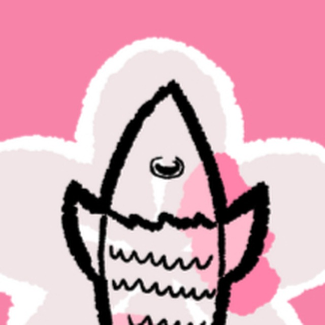

Munareich
Located in the hills of Munareich, right above the plains there stand a cherry grove. The Guardians of Fur(y) protect said grove, hence the decsendants naming it 'Cativille'. It is connected to the heart of Munareich (past village / now in construction parliment building) through minecart, with a giant bridge accross the Fisch Lake.
Cativille News
Learn the lastest news of Cativille through our Telegram channel!

Enjoy the nicest spring in Cativille with the water sourced from the underground dripstone caves.
Resources
Cativille has many valueable and cool resources, containing deep dark, gigantic dripstone caves and many ores, like diamond!
Main Base, Munareich
Transportation has never been so easy! Our portal is right next to the main base portal! Just hop in and, whaala! So why not #visitcativille2025